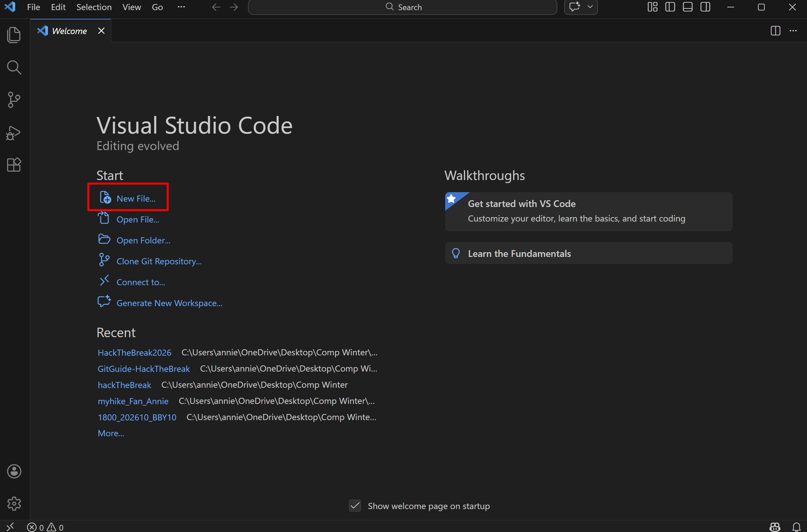
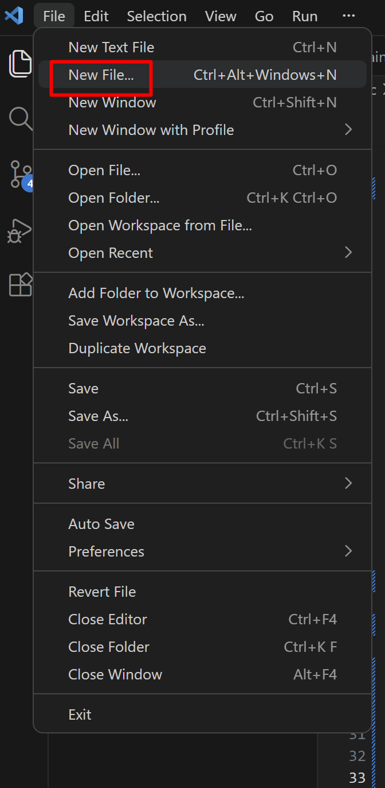

Step 1: Open VS Code
Launch your VS Code to get started.

Step 2: Click New File
There are 2 ways to do this.
1. Can click the add new file icon

2. Can click file on the top left corner 2.1 Find create new file
2.1 Find create new file
